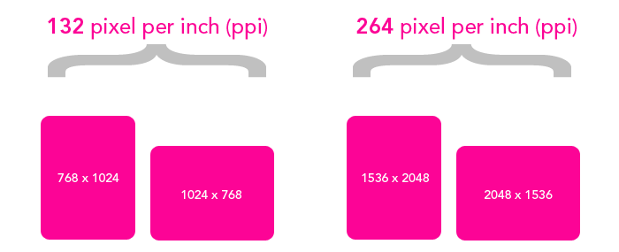

CSS3: Media-Queries
Controlling the presentation without modifying the content itself.

Hello
my name is
Tomomi
Nokia Silicon Valleyhttp://www.flickr.com/photos/archer10/4312413546/
@media handheld {
/* Some mobile-specific CSS here */
}
Only supported by:
Controlling the presentation without modifying the content itself.
Separate styles by the width of the target viewport
@media only screen
and (min-width : 768px)
and (max-width : 1024px) {
/* Styles */
}
by device-width, the width of the device's screen size
@media only screen
and (min-device-width : 320px)
and (max-device-width : 480px) {
/* Styles */
}
combined with screen orientations
@media only screen
and (min-device-width : 768px)
and (max-device-width : 1024px)
and (orientation : landscape) {
/* Styles */
}...
separate styles by device pixel ratio


window.devicePixelRatio
| Device | Browser | Pixel Density |
|---|---|---|
| Nexus One | Android browser | 1.5 |
| Galaxy Nexus | Chrome | 2.0 |
| Galaxy Nexus | Opera Mobile | 2.25 |
@media only screen and (min-device-pixel-ratio: 2) {
/* some hi-res css */
}
@media only screen and (-webkit-min-device-pixel-ratio: 1.5) {...}
@media only screen and (min--moz-device-pixel-ratio: 1.5) {...}
@media only screen and (-o-min-device-pixel-ratio: 3/2) {...}
@media (-webkit-min-device-pixel-ratio: 2),
(min-resolution: 192dpi) {
...
} Typical Screen: 96dpi (96px = 1in in CSS units)
@media (-webkit-min-device-pixel-ratio: 2),
(min-resolution: 2dppx) {
...
}
var mql = window.matchMedia('(orientation:landscape)');
if (mql.matches) {
/* the current orientation is in landscape */
} else {
/* portrait */
}
<meta name="viewport" content="width=device-width">
@viewport {
width: device-width;
}
@-o-viewport {width: device-width}
@-ms-viewport {width: device-width} *
@viewport {width: device-width}
@media screen and (orientation: portrait) {
@-ms-viewport {
width: 768px;
height: 1024px;
}
/* CSS for portrait layout goes here */
}
nonecoarse aka fat fingerfine01http://www.flickr.com/photos/archer10/4312413546/

.banner {
background-image: url(banner.png);
width: 320px; height: 160px;
}
@media only screen and (-webkit-min-device-pixel-ratio: 2),
only screen and (min-resolution: 192dpi) {
.banner {
background-image: url(banner-2x.png);
background-size: 100%;
}
}
<img src="logo.svg" width="">

<span aria-hidden="true" data-icon="">fork me</span>
@font-face {
font-family: 'icons';
src: url('fonts/icons.woff') format('woff');
}
[data-icon]::before {
font-family: 'icons';
content: attr(data-icon);
font-size: 72px;
}
OH NOES! <img> was not made for the responsive design!
<picture width="500" height="500">
<source media="(min-width: 45em)" src="large.jpg">
<source media="(min-width: 18em)" src="med.jpg">
<source src="small.jpg">
<img src="fallback.jpg">
<p>Accessible text</p>
</picture>
http://www.flickr.com/photos/archer10/4312413546/
http://www.flickr.com/photos/archer10/4312413546/
Responsive Typography by Marko Dugonjić
Tomomi Imura